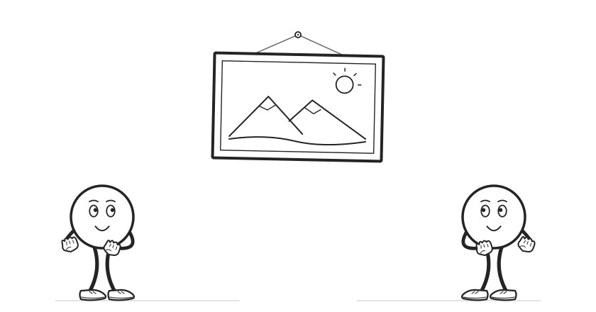

MACHINE LEARNING & AI FOR THE SOCIAL SCIENCES
Boosting with regression trees

Further reading
Susan Athey and Guido W. Imbens (2019), “Machine Learning Methods Economists Should Know About”.
Trevor Hastie, Robert Tibshirani, and Jerome Friedman (2009), The Elements of Statistical Learning, 2nd edition, Chapter 10: “Boosting and Additive Trees.”